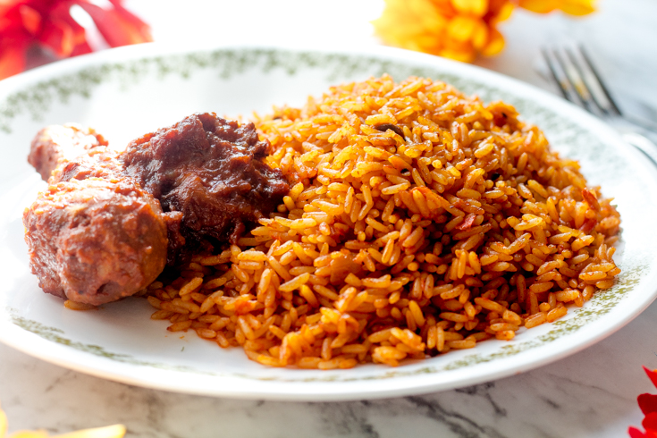

Jollof Rice

Description
Jollof Rice is a famous Nigerian Delicacy.
Ingredients
- Rice
- Tomatoes
- Onions
- Spices
- Curry
- Thyme
- Salt
Steps
- Boil the rice until it is half done.
- Fry the vegtables for a minute or two.
- Add the rice and water to the vegtables while they're still frying.
- Add the seasoning.
- VOILA!